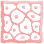

Everything you need to know to survive inside the micro‑world.
Eliminate all viruses on the grid before they overrun the field. Complete the whole healing trip of a random character through all 16 procedural stages to unlock special reward characters. The difficulty increases with each stage, every two stages you will be ambiented in different human body affected part introducing new virus types and more aggressive behavior. The number of virus increases from 6 to 14 thorugh the trip. After completion of the healing trip the game will restart with a new character to save. Survive as much as possible and achieve the highest score possible to enjoy it on the Hi-score table online. Your chance to get the best scores is by having three lives + only one extra life at 30.000 points.
The game is playable with both keyboard and joypad. Menus navigation and pause menu can also be controlled with the mouse.
Use joypad or W A S D (customizable keys) to move your antibody across the grid.
Space — Push / destroy a Bio‑Block. Push the barriers to activate them and stun viruses.

Solid obstacles but the main action is to push them to throw them away. The coolest thing is that blocks can crush viruses if throwed to them. If the block cannot move, it will crumble down. Advice: "Do not destroy too many blocks or you'll be vulnerable to viruses movement". The viruses may destroy randomly a lot of blocks in their wandering and let you be vulnerable to them. As little compensation the barriers generate blocks beside them randomly at a slow rate.
The antibiotics move like Bio-Blocks, crushing viruses in their path, but the best feature is to align them horizontally or vertically to get the big bonus and stun all viruses in the stage.
The barriers are the four sides of the stage. You can push them to stun viruses and release special enzima that slow down viruses. The barrier became unactive for 7 seconds before using them again
Hidden bonus hidden behind one random Bio-Block. The DNA bonus appears only when the Bio-Block that contains it is destroyed. The effect of the DNA bonus is to calm down all viruses that are seeking you in that moment.